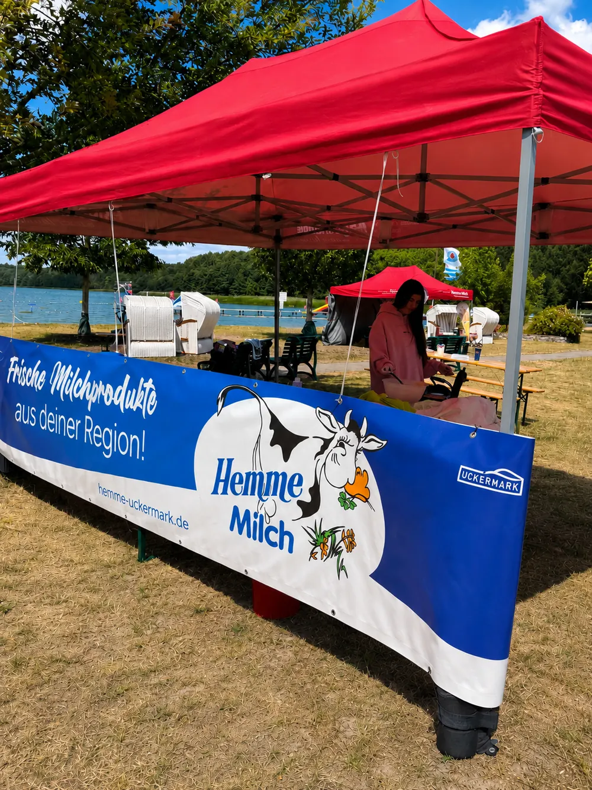
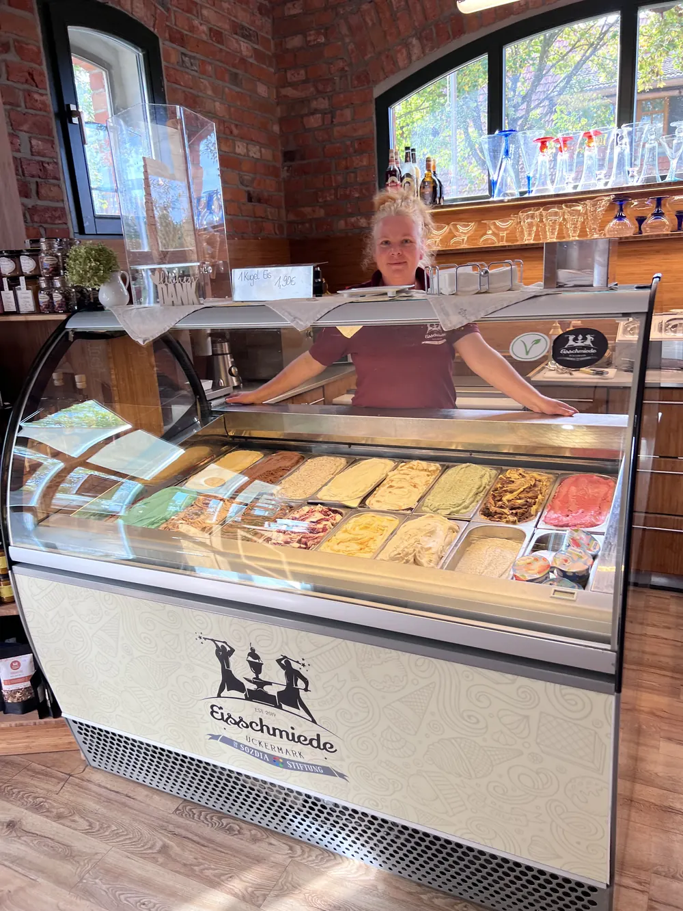
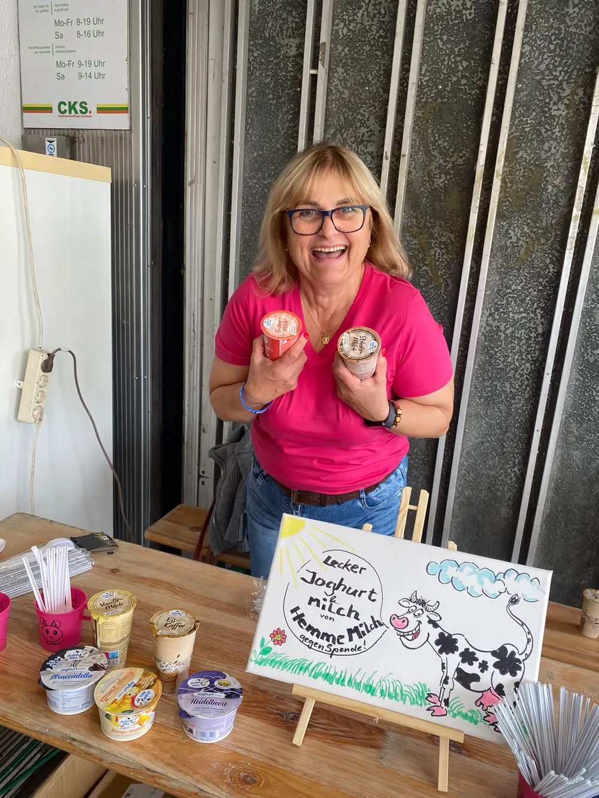

- Startseite
- Partner
Zusammen aus der Region
Unsere Partner aus der Region
Höfe, Handel, Betriebe, Radio und Vereine: Mit ihnen bringen wir frische Milch aus der Uckermark nach Berlin und Brandenburg.



Auf einen Blick
Hemme Milch arbeitet zusätzlich zur eigenen Viehhaltung mit vier regionalen Milchviehbetrieben zusammen, für die derselbe 90-Prozent-Anspruch beim Futter gilt. Dazu kommen Partner im Handel, Betriebe aus der Region, drei Radiosender und Sponsoring in der Uckermark.
- Partnerhöfe liefern Milch
- 4
- Handelsketten
- 5
- Partner aus der Region
- 10
- Sponsoring-Engagements
- 6
Unsere Partnerhöfe
Wolters
Milchviehbetrieb Wolters GmbH. Verantwortlich: Herr Wolters.
uckerkaas.deWelsetal
Welsetal Agrargesellschaft mbH in Welsow. Verantwortlich: Achim Jänicke.
Parstein-Bölkendorf
Agrar GmbH Parstein-Bölkendorf. Verantwortlich: Herr Miers.
Schramm
Schramm GbR in Flemsdorf. Familienbetrieb und kleinster Lieferant.
Milch ist unser Rohstoff, deshalb stellen wir höchste Anforderungen an ihre Beschaffenheit. Neben dem sorgsamen Umgang mit unserem eigenen Milchkuh-Bestand pflegen wir eine faire Partnerschaft zu ausgewählten Milchviehbetrieben in der Umgebung. So kontrollieren wir den ganzen Prozess, vom Futter über die Tierhaltung bis zu den fertigen Produkten.
Für alle Partnerhöfe gilt unser Anspruch: 90 Prozent des Futters für die Milchkühe werden selbst erzeugt. Nur so behält die Milch den charakteristischen, gehaltvollen Hemme-Geschmack.
Handel
Supermärkte
EDEKA, REWE, Penny, Netto und Kaufland.
Im Mai 2025 war eine Delegation der REWE-Region Ost bei uns zu Gast und hat die ganze Kette kennengelernt, von den Futterpflanzen über die Haltung der Kühe bis zur Qualitätssicherung im fertigen Produkt.
Aus der Region
Bäckerei Exner
Bäckerei Wiese
Eisschmiede Pinnow
Spargelhof Klaistow
Winkelmanns Spargelhof Klaistow, Produktkooperation.
Märkisch Edel
Q Regio
scharfes gelb
LAG Uckermark
pro agro e.V.
Stadt Angermünde
Im Radio
rbb
BB Radio
Radio Potsdam
Außerdem ist Hemme Teil der Kampagne „Deine Wahl ist regional“.
Sponsoring und Engagement

Uckermark gegen Leukämie
Kinderstrandfest
Der Stadt Angermünde am Wolletzsee.
Turbine Potsdam
Stoppelrennen
Springturnier Pinnow
Reit- und Springturnier in Pinnow.
Mauz & Hoppel
Fragen zu unseren Partnern
Woher bezieht Hemme zusätzlich Milch?
Von vier regionalen Milchviehbetrieben: Milchviehbetrieb Wolters GmbH, Welsetal Agrargesellschaft mbH, Agrar GmbH Parstein-Bölkendorf und Schramm GbR in Flemsdorf.
Gelten für die Partnerhöfe dieselben Regeln?
Ja. Auch auf den Partnerhöfen müssen 90 Prozent des Futters selbst erzeugt werden, und gefüttert wird ohne Gentechnik.
Wo engagiert sich Hemme in der Region?
Unter anderem bei Uckermark gegen Leukämie, beim Kinderstrandfest der Stadt Angermünde, beim Reit- und Springturnier Pinnow, beim Stoppelrennen und bei Turbine Potsdam.